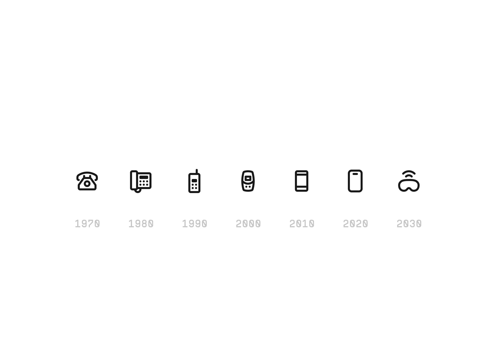

Self
Pinned Issue
NO. 01
Esteem
13.02.2024
Nurturing Self-Confidence in Children
By Emma Thompson
5 Min Read
In a world that can often be challenging for children, building self-confidence is key to growing a stronger economy.
> See More
Control
13.02.2024

The Power of Self-Discipline in Achieving Goals
By James Harrison
5 Min Read
Self-discipline is the bridge between goals and accomplishments. we'll delve into the topic more as it becomes vital.
> See More
Talk
13.02.2024

The Art of Self-Expression Through Creative Writing
By Richard Carnation
5 Min Read
Creative writing is a powerful tool for self-expression. Through journalism, poetry and composing, the world is made smarter each day.
> See More
Featured Articles
1
13.02.2024
Decoding the Metaverse: Navigating the Virtual Frontier
Alex Chen explores the rapidly evolving world of the metaverse, discussing its implication a what its going to affect in the coming future.
2
13.02.2024
Climate Crisis 2,0: Up
Dr. Sarah Martinez delves into the increasing frequency and intensity of extreme weather events that have taken place in the previous year.
3
13.02.2024
Remote Work Revolution: Lessons from the Pandemic Era
Emily Tran reflects on the transformation impact of remote work during the pandemic. The effects have been noticed mainly in the office based industry.
4
13.02.2024
AI in Healthcare: A Prescription for the Future
Dr. David Smith explores the latest breakthroughs in artificial intelligence in healthcare.
5
13.02.2024
Cognitive Bias in a Digital World
Dr. Lisa Johnson explains how cognitive biases manifest in our increasingly digital world in which we induce technology on our young.
6
13.02.2024
Ocean Conservation in the 21st Century
Dr. Maria Rodriguez explores contemporary efforts in ocean conservation, highlighting the impacts of the industrial line towards the ocean.